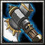

- 主要屬性 力量
攻擊範圍 128
- 基礎護甲 8
基礎攻速 1.8
- 基礎攻擊 118 - 136
基礎跑速 310
上杉家臣
上杉家侍大將，幼名武王丸，信濃之豪族，也是城主，曾經擊退武田信玄兩批大軍，也是名將上杉謙信做不到的事，勇名轟動鄰國。
-

-
W
動地斧
-
100/120/140/160
-
20
猛擊地面，對附近的敵軍造成(150/250/350/450)傷害並且震昏(1.0/1.3/1.6/1.9)秒。
-
-
E
震地斧
-
105/125/145/165
-
20/18/16/14
敲擊地面，對附近的敵軍造成200傷害並減緩(18/22/26/30)%移動速度 ，並且在接下來8秒內獲得破軍靈光，使附近敵軍護甲降低(4/6/8/10)。
冷卻時間隨技能等級提升降低。
增加身旁友軍(7/14/21/28)%攻擊傷害。永久增加自身(4/8/12/16)力量。
在指定的範圍內不斷打出震波，每個震波將會使身處其中的敵軍受到60傷害並暈眩(0.2/0.3/0.4)秒。最多可持續(50/60/70)波 。
學習等級為6/12/18。
永久性的提升(3/6/9/12)靈活、智慧和力量。